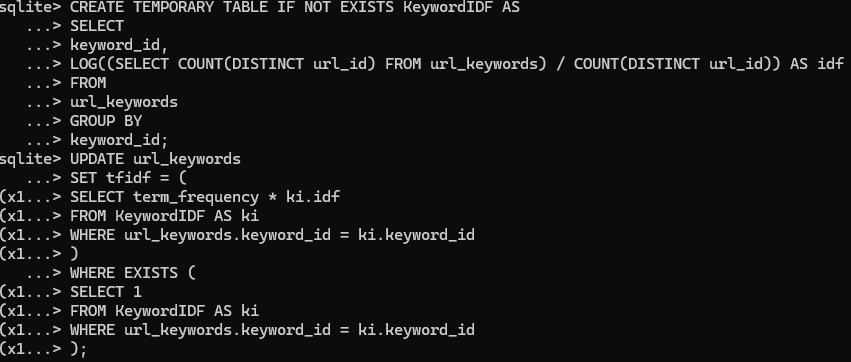
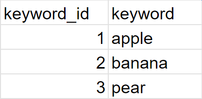
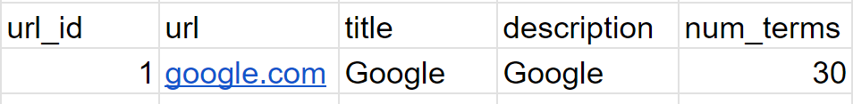
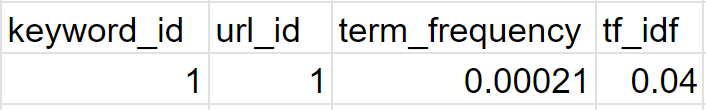
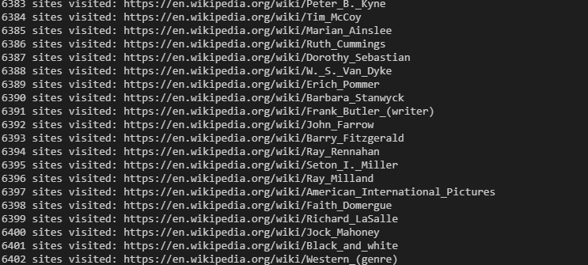

This is a web crawler that I used to scrape relevant information from Wikipedia articles for a search engine. The web crawler retrieves the document keywords, title, and description from the site and stores them in a database. The search engine then uses this information to return relevant results. The webcrawler is currently restricted to Wikipedia articles, but it could be expanded to other sites through a small refactor. It is written in Java using Maven, Jsoup, and jdbc for SQLite.
Here is an overview of how each class contributes to the web crawlers functionality.
The computation of the TF-IDF value is extremely slow. By the end of running the crawler, there are around 15 million+ unique scenarios for which I need to compute a value and update another value. At first, I attempted to compute them in Java, but the time it took to compute the TF-IDF values for each keyword was too long. I then realized that SQLite has several built-in functions that can compute the TF-IDF values for me. I wrote a script for the TF-IDF computation in SQLite, which sped up the process considerably. It still took ~10 minutes, and there are probably better ways for me to do this, but it works. Here is what the script looks like:
After reading up on TF-IDF, I felt that I knew enough to attempt to search data with it. I realized I would first need to gather the data, which inspired this project. Here is my implementation process.
The webscraper creates a database file with three tables. Within these three tables it stores the relevant extracted information from the site. Here are several examples:
Stores each keyword's information.
Stores each article's information.
Stores the relationship between each keyword and the article it was found in.
The webcrawler does not compute the tfidf score as it is running, because the IDF is dependendent on the final number of documents. Here is what the webcrawler outputs as it is running:
Looking back, I think I might have used Python as opposed to Java for a program like this. Python has a lot of libraries that would have made this project easier, like BeautifulSoup for web scraping. However, I am glad I did this project in Java because I learned a lot about web scraping, databases, and the TF-IDF algorithm. Python would have abstracted a lot of the details away.